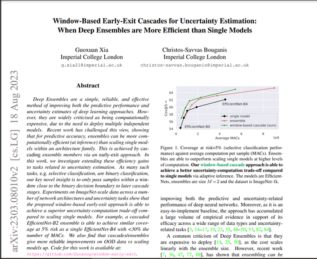
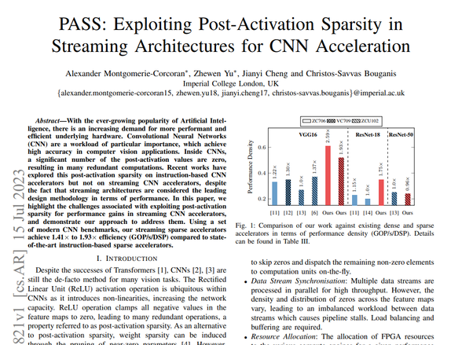
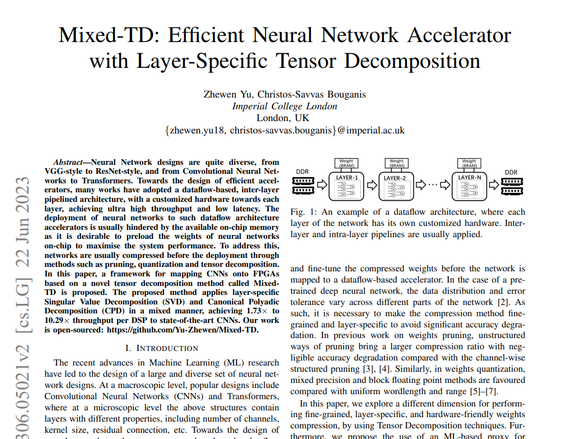
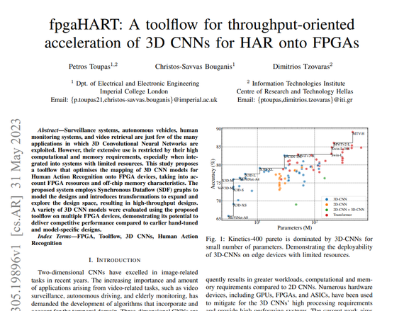
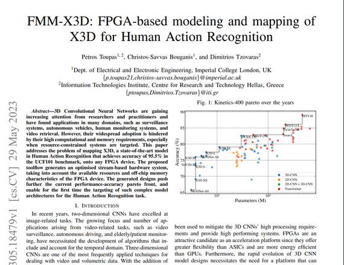
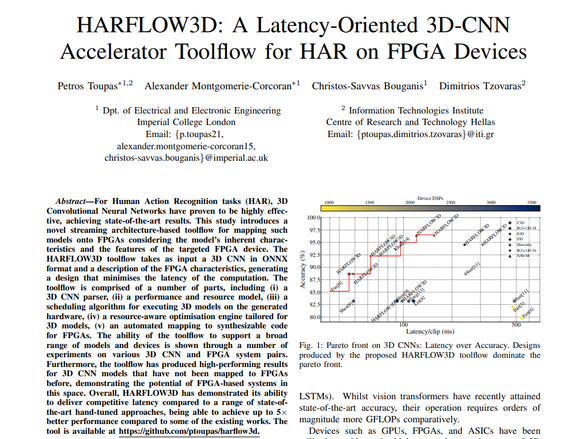
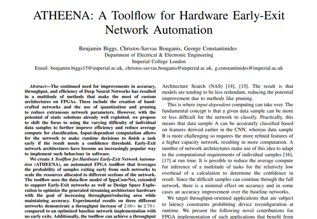

Publications
Selected recent work. TODO: add authors and PDF/arXiv links.

Window-Based Early Exit Cascades for Uncertainty EstimationICCV 2023
PASSFPL 2023
Mixed-TDFPL 2023
fpgaHARTFPL 2023
FMM-X3DASAP 2023
HARFLOW3DFCCM 2023
ATHEENAFCCM 2023- Smart off-chip eviction for FPGA acceleratorsFCCM 2023
- A survey on toolflows for mapping CNNs on FPGAs (with CNN-to-FPGA Benchmark Suite)ACM Computing Surveys